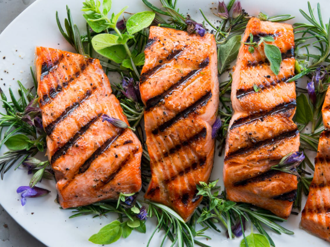
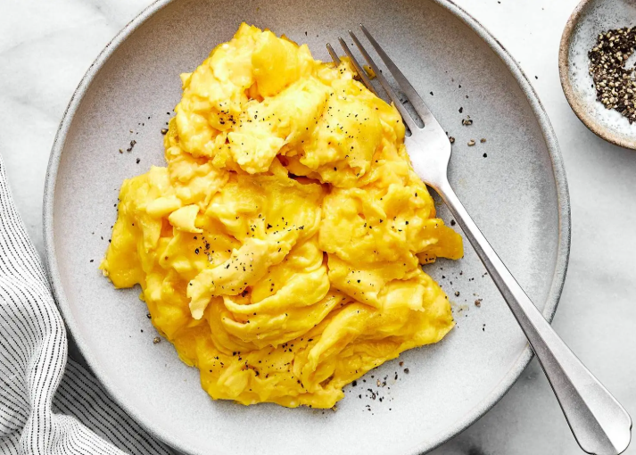
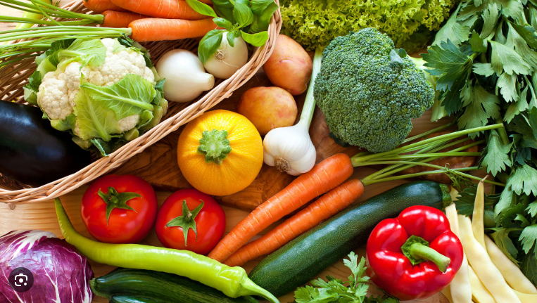

What to Look For
Protein is the main thing you need to start eating in order to build muscle in the gym. Protein builds muscle by providing the necessary amino acids to repair and grow muscle fibers after they are broken down during exercise. Intense workouts cause micro-tears in muscle fibers, and the body uses dietary protein to repair this damage. General rule of thumb is you should be eating about 70–80% of your body weight in protein.
Although protein is important you also want to watch fat and carbs. Carbs are very good before a workout as that is what helps fuel your workouts. You should never consume a high fat meal before a workout as this will slow you down. You want to try to intake as little fat as possible, however, some fats are good for you with many nutrients like eggs and avocados.
When it comes to losing weight you want to make sure the total calorie consumed is less than your total calories burned. There are many helpful apps that will tell you how many calories you need to stay the same weight so just make sure you are eating less than that. Same goes for if you’re trying to gain weight to help build muscle.
Helpful Foods
Here are some foods to look for that will help your journey.
- Chicken
- Beef
- Fish
- Nuts
- Nonfat Yogurt


- Milk
- Eggs
- Potatoes
- Rice
- Fruit
- Vegetables
- Beans
- Bread
- Avocados
- Cottage Cheese
There are plenty more options but here are some to help you out.
